statistical analysis of likelihood maps¶
[1]:
import retinoto_py as fovea
subset_factor = 400
subset_factor = 50
subset_factor = 200
args = fovea.Params(do_fovea=True, batch_size=1, subset_factor=subset_factor)
args
[1]:
Params(batch_size=1, num_workers=4, prefetch_factor=0, image_size=224, grid_size_ecc=161, grid_size_ang=309, do_mask=False, do_fovea=True, use_hexagonal_grid=True, rs_min=-3.5, rs_max=0.7, angle_start=-5.235987755982989, angle_margin=0.010166966516471823, mode='bilinear', padding_mode='zeros', model_name='convnext_base', num_epochs=100, subset_factor=200, optimizer_name='adamw', loss_name='CrossEntropyLoss', base_lr=1e-06, final_lr=1e-09, num_warmup_epochs=20, delta1=0.3, delta2=0.002, weight_decay=0.0001, label_smoothing=0.0005, do_full_training=True, do_augment=True, augment_proba=0.85, stochastic_depth_prob=0.6, seed=1998, shuffle=True, verbose=False)
[2]:
# model_filename = args.data_cache / f'32_fovea_model_name={args.model_name}_dataset={dataset}.pth'
# model = fovea.load_model(args, model_filename=model_filename)
# model_filename
[3]:
npz_filename = args.data_cache / '42_likelihood_maps.npz'
# %rm {npz_filename} # FORCING RECOMPUTE
[ ]:
resolution = (100, 100)
resolution = (30, 30)
resolution = (7, 7)
resolution = (25, 25)
# resolution = (21, 21)
N_fixations = fovea.np.prod(resolution)
size_ratios = fovea.np.linspace(0.1, 0.9, 9)
size_ratios = fovea.np.linspace(0.1, 0.9, 15)
size_ratios = fovea.np.linspace(0.1, 1.3, 15)
size_ratios = fovea.np.linspace(0.8, 1.3, 7)
angles = [0, 45, 90, 135, 180]
angles = [0, 45, 90, 135, 180, 225, 270, 315]
# size_ratios = fovea.np.linspace(0.1, 0.9, 3)
# angles=[0, 60, 120]
angles = [0, 90, 180, 270]
all_datasets = fovea.params.all_datasets
all_datasets = ['bbox']
do_foveas = [True, False]
do_foveas = [True]
[5]:
# from torchvision.transforms.functional import InterpolationMode, resize
for do_fovea in do_foveas:
for dataset in all_datasets:
args = fovea.Params(do_mask=not(do_fovea), do_fovea=do_fovea,
batch_size=1, subset_factor=subset_factor)
npz_filename = args.data_cache / f'42_likelihood_maps_dataset={dataset}_{do_fovea=}.npz'
if npz_filename.exists():
with fovea.np.load(npz_filename) as data:
likelihood_maps_label = data['likelihood_maps_label']
likelihood_maps_label_max = data['likelihood_maps_label_max']
likelihood_maps_max = data['likelihood_maps_max']
size_ratio_max = data['size_ratio_max']
else:
print('computing ', npz_filename)
VAL_DATA_DIR = args.DATAROOT / f'Imagenet_{dataset}' / 'val'
val_dataset = fovea.get_dataset(args, VAL_DATA_DIR, do_full_preprocess=False)
val_loader = fovea.get_loader(args, val_dataset)
if do_fovea:
model_filename = args.data_cache / f'32_fovea_model_name={args.model_name}_dataset=bbox.pth'
else:
model_filename = args.data_cache / f'21_model_name={args.model_name}_dataset=full.pth'
model = fovea.load_model(args, model_filename=model_filename)
likelihood_maps_label = fovea.np.empty((resolution[0], resolution[1], 0))
likelihood_maps_label_max = fovea.np.empty((resolution[0], resolution[1], 0))
likelihood_maps_max = fovea.np.empty((resolution[0], resolution[1], 0))
size_ratio_max = []
for _, (image, true_idx) in fovea.tqdm(enumerate(val_loader), total=len(val_loader.dataset)):
# image, true_idx = image.to(args.device), true_idx.to(args.device)
image = image.to('cpu')
image = image.squeeze(0)
image = fovea.squarify(image)
three, H, W = image.shape
assert H == W, f"aspect ratio should be one but {H=} and {W=} "
pos_H, pos_W = fovea.get_positions(H, W, resolution=resolution, do_hex=False)
try:
proba_label, proba_label_maximum, proba_max, proba_label_max = None, 0., None, None
size_ratio_max_ = size_ratios[0]
for size_ratio in size_ratios:
for angle in angles:
probas = fovea.compute_likelihood_map(args, model, image, pos_H, pos_W,
size_ratio=size_ratio, angle=angle, do_softmax=True)
probas = probas.cpu()
proba_label_ = probas[:, true_idx]
if proba_label_.max() > proba_label_maximum:
proba_label_maximum = proba_label_.max()
size_ratio_max_ = size_ratio
proba_max_, _ = probas.max(axis=-1)
if proba_max is None:
proba_max = proba_max_
else:
proba_max = fovea.torch.maximum(proba_max, proba_max_)
if proba_label_max is None:
proba_label_max = proba_label_
else:
proba_label_max = fovea.torch.maximum(proba_label_max, proba_label_)
if proba_label is None:
proba_label = proba_label_
else:
proba_label += proba_label_
proba_label = proba_label / len(size_ratios) / len(angles)
size_ratio_max.append(size_ratio_max_)
likelihood_maps_label_ = proba_label.cpu().numpy().reshape(resolution)
likelihood_maps_label = fovea.np.dstack((likelihood_maps_label, likelihood_maps_label_))
likelihood_maps_label_max_ = proba_label_max.cpu().numpy().reshape(resolution)
likelihood_maps_label_max = fovea.np.dstack((likelihood_maps_label_max, likelihood_maps_label_max_))
likelihood_maps_max_ = proba_max.cpu().numpy().reshape(resolution)
likelihood_maps_max = fovea.np.dstack((likelihood_maps_max, likelihood_maps_max_))
except Exception as e:
print(e)#, probas.shape, image.shape)
fovea.np.savez(npz_filename,
likelihood_maps_max=likelihood_maps_max,
likelihood_maps_label=likelihood_maps_label,
likelihood_maps_label_max=likelihood_maps_label_max,
size_ratio_max=fovea.np.array(size_ratio_max)
)
[6]:
size_ratio_max.shape, size_ratios.shape
[6]:
((397,), (15,))
[7]:
size_ratio_max.shape
[7]:
(397,)
[32]:
for do_fovea in do_foveas:
for dataset in all_datasets:
npz_filename = args.data_cache / f'42_likelihood_maps_dataset={dataset}_{do_fovea=}.npz'
with fovea.np.load(npz_filename) as data:
likelihood_maps_label = data['likelihood_maps_label']
likelihood_maps_max = data['likelihood_maps_max']
likelihood_maps_label_max = data['likelihood_maps_label_max']
size_ratio_max = data['size_ratio_max']
fig, ax = fovea.plt.subplots()
ax.hist(size_ratio_max, bins=fovea.np.unique(size_ratio_max).size)
ax.set(xlabel='size ratio', title=f'{do_fovea=} {dataset=} distribution of maximal size ratios')
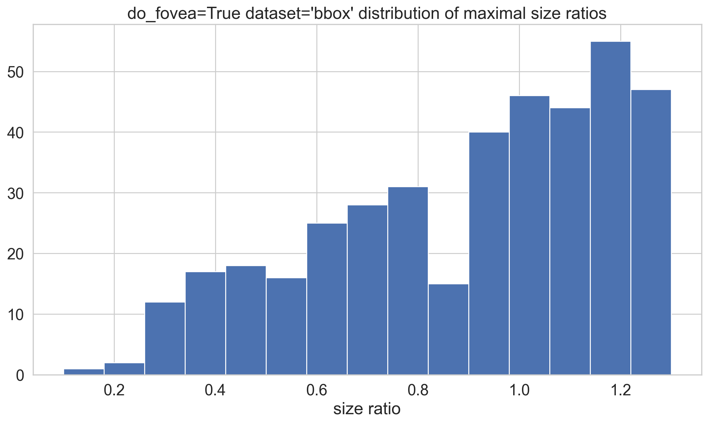
[9]:
for do_fovea in do_foveas:
for dataset in all_datasets:
npz_filename = args.data_cache / f'42_likelihood_maps_dataset={dataset}_{do_fovea=}.npz'
with fovea.np.load(npz_filename) as data:
likelihood_maps_label = data['likelihood_maps_label']
likelihood_maps_max = data['likelihood_maps_max']
likelihood_maps_label_max = data['likelihood_maps_label_max']
size_ratio_max = data['size_ratio_max']
# TODO analyse if you get a better recognition outside the center
correct_maps = likelihood_maps_label == likelihood_maps_max
fig, ax = fovea.plt.subplots()
contour = ax.contourf(correct_maps.mean(axis=-1))
fig.colorbar(contour, ax=ax) # Add colorbar
ax.axis('square')
fig.set_facecolor(color='white')
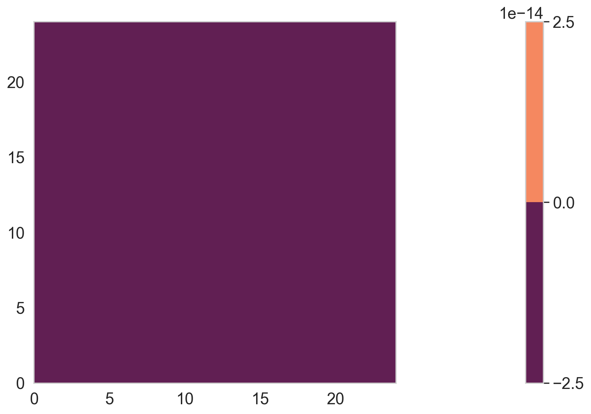
[10]:
for do_fovea in do_foveas:
for dataset in all_datasets:
npz_filename = args.data_cache / f'42_likelihood_maps_dataset={dataset}_{do_fovea=}.npz'
with fovea.np.load(npz_filename) as data:
likelihood_maps_label = data['likelihood_maps_label']
likelihood_maps_max = data['likelihood_maps_max']
likelihood_maps_label_max = data['likelihood_maps_label_max']
size_ratio_max = data['size_ratio_max']
fig, ax = fovea.plt.subplots()
contour = ax.contourf(likelihood_maps_label.mean(axis=-1))
fig.colorbar(contour, ax=ax) # Add colorbar
ax.axis('square')
mid_w = likelihood_maps_label.shape[1] / 2
mid_h = likelihood_maps_label.shape[0] / 2
ax.axvline(x=mid_w, color='white', linestyle='--', linewidth=2)
ax.axhline(y=mid_h, color='white', linestyle='--', linewidth=2)
fig.set_facecolor(color='white')
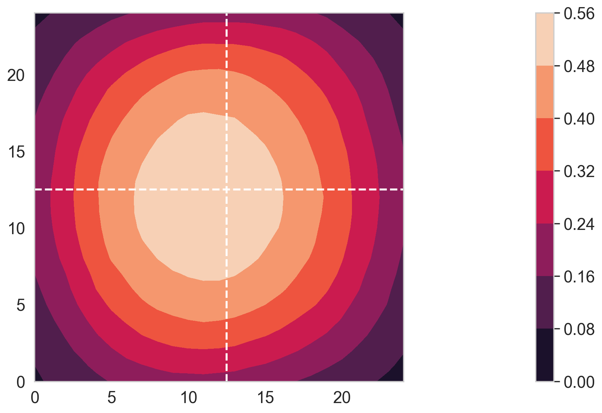
[11]:
for do_fovea in do_foveas:
for dataset in all_datasets:
npz_filename = args.data_cache / f'42_likelihood_maps_dataset={dataset}_{do_fovea=}.npz'
with fovea.np.load(npz_filename) as data:
likelihood_maps_label = data['likelihood_maps_label']
likelihood_maps_max = data['likelihood_maps_max']
likelihood_maps_label_max = data['likelihood_maps_label_max']
size_ratio_max = data['size_ratio_max']
fig, ax = fovea.plt.subplots()
contour = ax.contourf(likelihood_maps_max.mean(axis=-1)) fig.colorbar(contour, ax=ax) # Add colorbar ax.axis('square') ax.axvline(x=mid_w, color='white', linestyle='--', linewidth=2) ax.axhline(y=mid_h, color='white', linestyle='--', linewidth=2) fig.set_facecolor(color='white')
# i_image = 2
# proba = likelihood_maps[:, :, i_image]
# proba.min(), proba.max()
fig, ax = fovea.plt.subplots()
contour = ax.contourf(likelihood_maps_label.mean(axis=-1))
fig.colorbar(contour, ax=ax) # Add colorbar
ax.axis('square')
ax.axvline(x=mid_w, color='white', linestyle='--', linewidth=2)
ax.axhline(y=mid_h, color='white', linestyle='--', linewidth=2)
fig.set_facecolor(color='white')
accuracy = likelihood_maps_max.max(axis=(0, 1))
fig, ax = fovea.plt.subplots()
ax.hist(accuracy, bins=40)
ax.set(xlabel='likelihood', title='distribution of maximal label likelihoods')
accuracy = likelihood_maps_label_max.max(axis=(0, 1))
fig, ax = fovea.plt.subplots()
ax.hist(accuracy, bins=40)
ax.set(xlabel='likelihood', title='distribution of maximal label likelihoods')
accuracy = likelihood_maps_label.max(axis=(0, 1))
fig, ax = fovea.plt.subplots()
ax.hist(accuracy, bins=40)
ax.set(xlabel='likelihood', title='distribution of maximal label likelihoods')
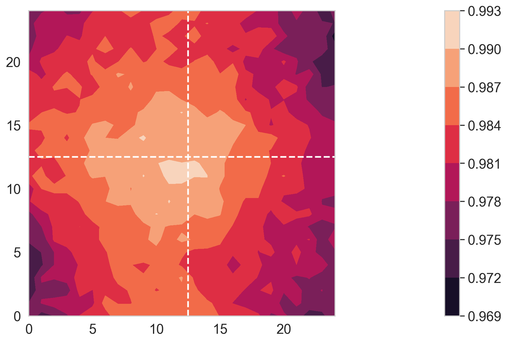
[17]:
import pandas as pd
import numpy as np
pos_H, pos_W = fovea.get_positions(1, 1, resolution=resolution, do_hex=False)
pos_H.min(), pos_H.max(), pos_W.min(), pos_W.max(), pos_H.shape, likelihood_maps_label.shape
[17]:
(np.float64(0.038461538461538464),
np.float64(0.9615384615384616),
np.float64(0.038461538461538464),
np.float64(0.9615384615384616),
(625,),
(25, 25, 397))
[18]:
# data = []
# for do_fovea in [True, False]:
# likelihood_maps = fovea.np.load(npy_filename)
# data_= pd.DataFrame({
# 'horizontal position': pos_H,
# 'vertical position': pos_W,
# 'probas': likelihood_maps.mean(axis=-1).T.flatten(),
# 'retinotopy': 'foveated' if do_fovea else 'uniform'
# })
# data.append(data_)
# combined_data = pd.concat(data, ignore_index=True)
# combined_data
[19]:
fig, axes = fovea.visualize_likelihood_map(likelihood_maps_label.mean(axis=-1))
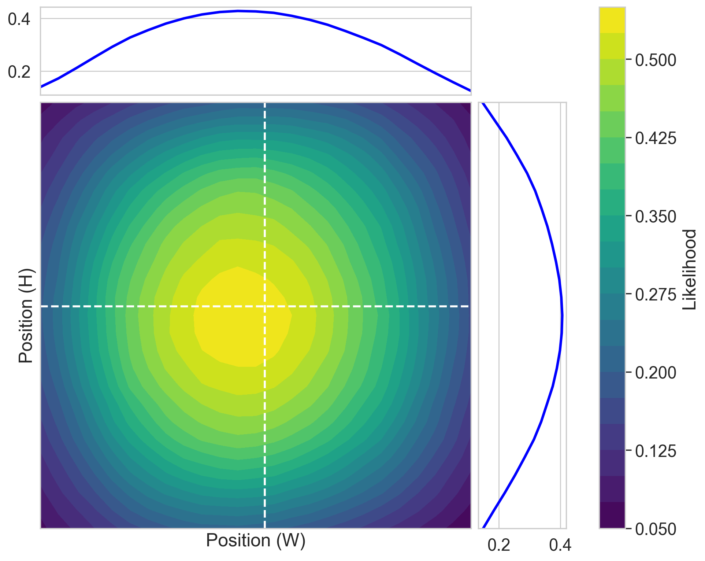
[33]:
for do_fovea in do_foveas:
for dataset in all_datasets:
npz_filename = args.data_cache / f'42_likelihood_maps_dataset={dataset}_{do_fovea=}.npz'
with fovea.np.load(npz_filename) as data:
likelihood_maps_label = data['likelihood_maps_label']
likelihood_maps_max = data['likelihood_maps_max']
likelihood_maps_label_max = data['likelihood_maps_label_max']
size_ratio_max = data['size_ratio_max']
for i_image in [42, 23, 57]:
fig, axes = fovea.visualize_likelihood_map(likelihood_maps_label[:, :, i_image], sigma=.5)
fig.suptitle(f'{do_fovea=} {dataset=} {i_image=}')
fovea.plt.show()
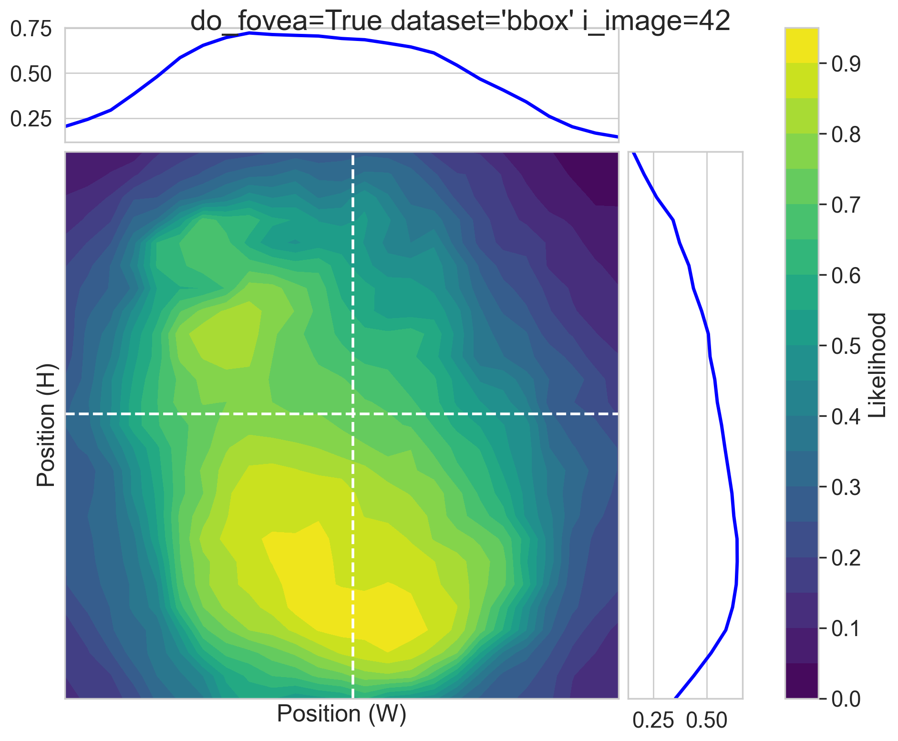
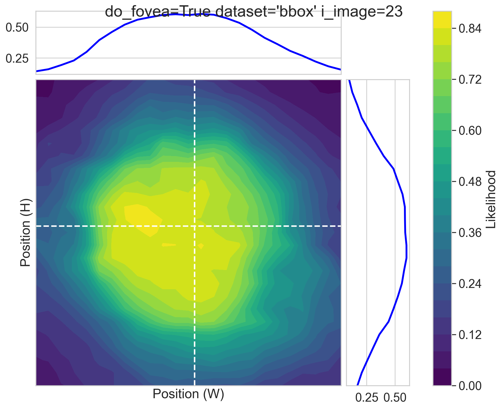
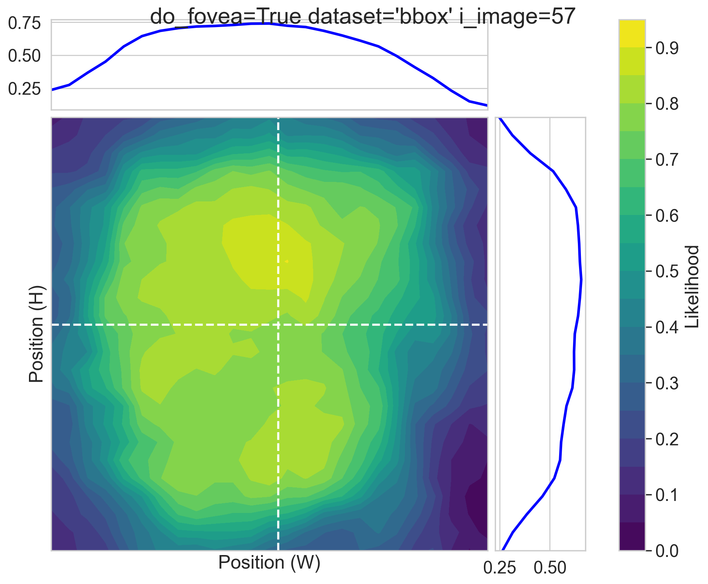
fitting and doing stats¶
[21]:
sigma = .5
gaussian_max_dfs = {}
gaussian_label_dfs = {}
for do_fovea in do_foveas:
gaussian_label_dfs[do_fovea] = {}
gaussian_max_dfs[do_fovea] = {}
for dataset in all_datasets:
npz_filename = args.data_cache / f'42_likelihood_maps_dataset={dataset}_{do_fovea=}.npz'
with fovea.np.load(npz_filename) as data:
likelihood_maps_label = data['likelihood_maps_label']
likelihood_maps_max = data['likelihood_maps_max']
gaussian_label_dfs[do_fovea][dataset] = fovea.compute_gaussian_params(likelihood_maps_label, sigma=sigma)
gaussian_max_dfs[do_fovea][dataset] = fovea.compute_gaussian_params(likelihood_maps_max, sigma=sigma)
# Example: Check if sigma_x is usually bigger than sigma_y
is_sigma_x_bigger = gaussian_df["sigma_x"] > gaussian_df["sigma_y"]
print(f"Fraction of images where sigma_x > sigma_y (more horizontal): {is_sigma_x_bigger.mean():.2f}")
print(f"Fraction of images where sigma_y > sigma_x (more vertical): {(~is_sigma_x_bigger).mean():.2f}")
[21]:
| amplitude | x0 | y0 | sigma_x | sigma_y | theta | theta_deg | sigma_major | sigma_minor | elongation | sigma | |
|---|---|---|---|---|---|---|---|---|---|---|---|
| 0 | 0.071164 | -1.000000 | -0.684604 | 0.917487 | 0.326227 | 0.017268 | 0.989378 | 0.917487 | 0.326227 | 2.812421 | 0.547091 |
| 1 | 1.000000 | -0.339180 | -0.000627 | 0.704107 | 0.512894 | 0.657354 | 37.663600 | 0.704107 | 0.512894 | 1.372814 | 0.600943 |
| 2 | 0.993944 | -0.096395 | -0.097699 | 0.605738 | 0.984255 | -0.033865 | -1.940318 | 0.984255 | 0.605738 | 1.624887 | 0.772140 |
| 3 | 0.507927 | -0.150918 | -0.027842 | 0.759684 | 0.675990 | -0.646664 | -37.051104 | 0.759684 | 0.675990 | 1.123809 | 0.716616 |
| 4 | 0.200686 | -0.017008 | 0.189100 | 0.506198 | 0.233110 | 0.565655 | 32.409653 | 0.506198 | 0.233110 | 2.171501 | 0.343511 |
[22]:
# Example: Check if sigma_x is usually bigger than sigma_y
is_sigma_x_bigger = gaussian_df["sigma_x"] > gaussian_df["sigma_y"]
print(f"Fraction of images where sigma_x > sigma_y (more horizontal): {is_sigma_x_bigger.mean():.2f}")
print(f"Fraction of images where sigma_y > sigma_x (more vertical): {(~is_sigma_x_bigger).mean():.2f}")
Fraction of images where sigma_x > sigma_y (more horizontal): 0.37
Fraction of images where sigma_y > sigma_x (more vertical): 0.63
[ ]:
for do_fovea, c_fovea in zip([True, False], ['viridis', 'plasma']):
for dataset in fovea.params.all_datasets:
g = fovea.sns.jointplot(
data=gaussian_label_dfs[do_fovea][dataset],
x="x0",
y="y0",
# kind="kde",
cmap=c_fovea,
)
g.fig.suptitle(f"{'foveated' if do_fovea else 'uniform'} - dataset={dataset}")
fovea.plt.show()
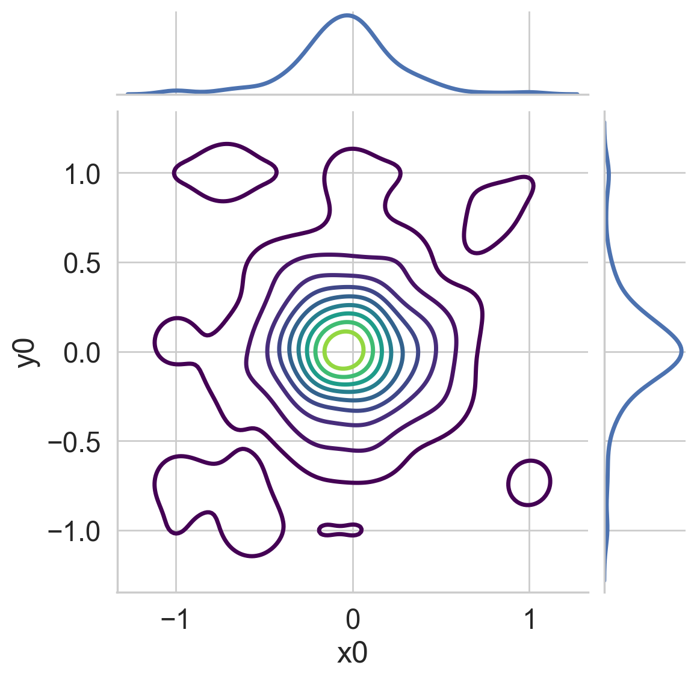
[24]:
# Joint KDE plot with marginals
g = fovea.sns.jointplot(
data=gaussian_df,
x="sigma_x",
y="sigma_y",
kind="scatter",
cmap="viridis",
)
# plt.show()
/Users/laurentperrinet/sdrive_cnrs/hot_from_git/Retinotopy_project/retinoto_py/.venv/lib/python3.14/site-packages/seaborn/relational.py:438: UserWarning: No data for colormapping provided via 'c'. Parameters 'cmap' will be ignored
points = ax.scatter(x=x, y=y, **kws)
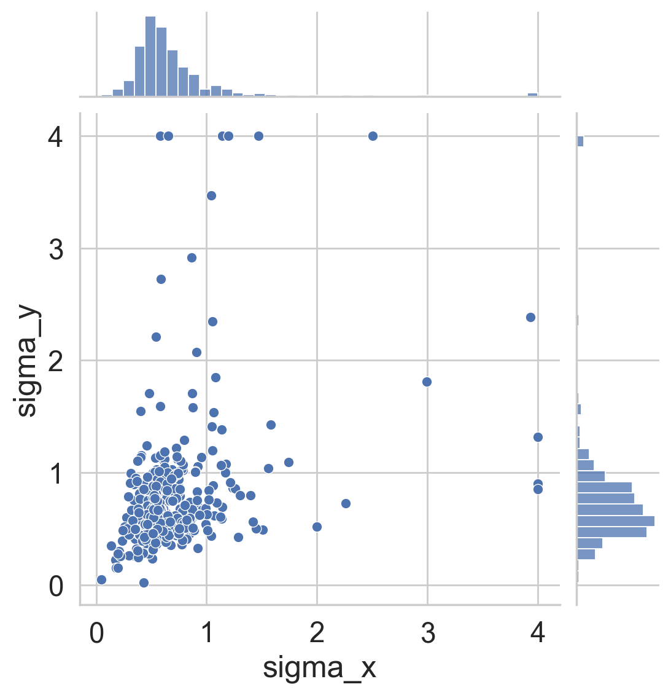
[25]:
# Joint KDE plot with marginals
g = fovea.sns.jointplot(
data=gaussian_df,
x="sigma_minor",
y="sigma_major",
kind="scatter",
alpha=.2,
)
# plt.show()
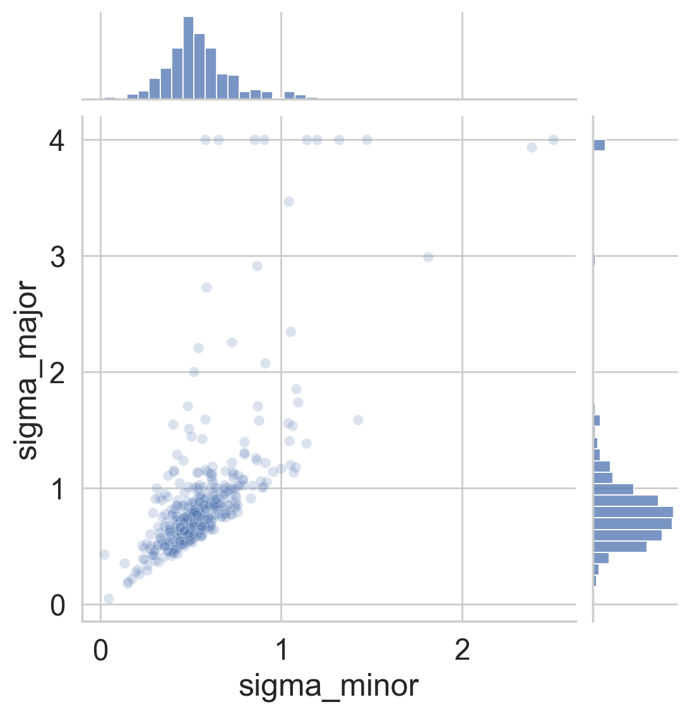
[26]:
import numpy as np
for dataset in ['bbox']: #fovea.params.all_datasets:
fig, ax = fovea.plt.subplots()
for do_fovea, c_fovea in zip([True, False], ['skyblue', 'green']):
print(dataset, do_fovea)
gaussian_df = gaussian_max_dfs[do_fovea][dataset]
g = fovea.sns.histplot(
ax=ax,
data=gaussian_df,
x='sigma',
bins=40,
element='step', # Use step plots for clarity
kde=False, # Disable KDE for log-scaled x-axis
color=c_fovea,
alpha=0.7,
edgecolor='black',
log_scale=(True, False), # Log scale only for the x-axis
label=f'{'foveated' if do_fovea else 'uniform'}'
)
# Compute the peak (bin with the highest count)
counts, bin_edges = np.histogram(np.log(gaussian_df['sigma']), bins=40)
peak_bin_index = np.argmax(counts)
log_peak_value = (bin_edges[peak_bin_index] + bin_edges[peak_bin_index + 1]) / 2 # Midpoint of the peak bin
peak_count = counts[peak_bin_index]
peak_value = np.exp(log_peak_value)
# Annotate the peak on the plot
fovea.plt.axvline(x=peak_value, color=c_fovea, linestyle='--')#, label=f'Peak: {peak_value:.2f}')
fovea.plt.text(
1.3,
108 if do_fovea else 85,
f' Peak @ {peak_value:.2f}',
ha='center',
va='bottom',
color=c_fovea,
fontsize=24,
bbox=dict(facecolor='white', alpha=0., edgecolor='none'),
)
ax.legend()
fovea.plt.show()
[26]:
Text(1.3, 108, ' Peak @ 0.57')
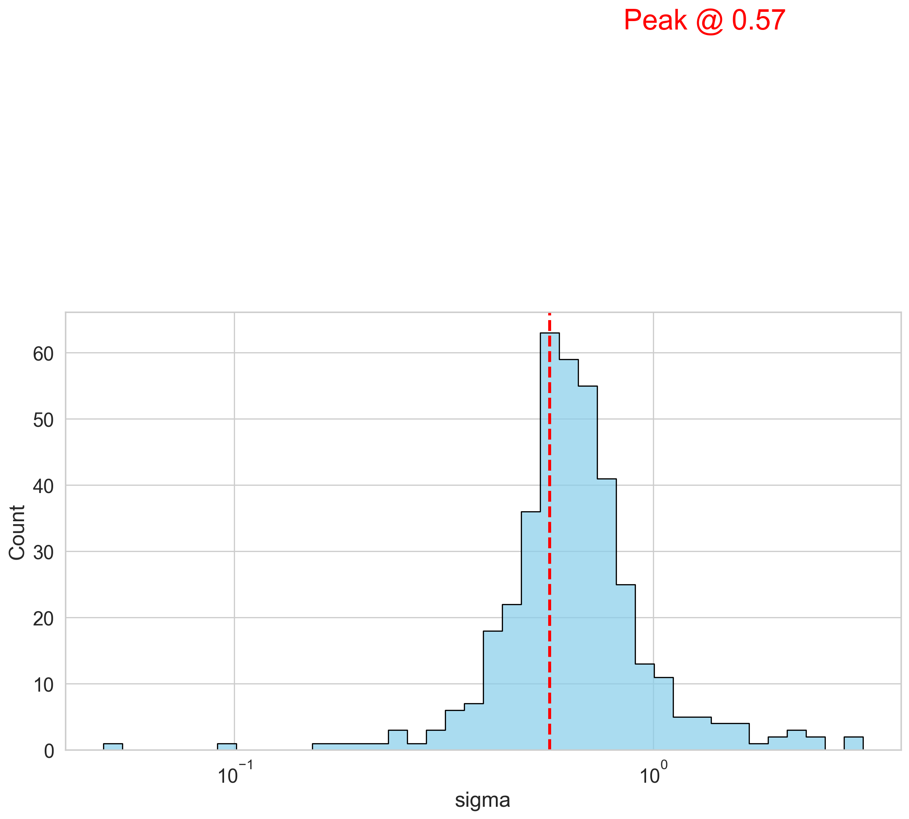
[27]:
g = fovea.sns.histplot(
data=gaussian_df,
x='elongation',
bins=40,
element='step', # Use step plots for clarity
kde=False, # Disable KDE for log-scaled x-axis
color='skyblue',
alpha=0.7,
edgecolor='black',
log_scale=(True, False) # Log scale only for the x-axis
)
# Compute the peak (bin with the highest count)
counts, bin_edges = np.histogram(np.log(gaussian_df['elongation']), bins=40)
peak_bin_index = np.argmax(counts)
log_peak_value = (bin_edges[peak_bin_index] + bin_edges[peak_bin_index + 1]) / 2 # Midpoint of the peak bin
peak_count = counts[peak_bin_index]
peak_value = np.exp(log_peak_value)
# Annotate the peak on the plot
fovea.plt.axvline(x=peak_value, color='red', linestyle='--', label=f'Peak: {peak_value:.2f}')
fovea.plt.text(
4,
80,
f' Peak @ {peak_value:.2f}',
ha='center',
va='bottom',
color='red',
fontsize=24,
bbox=dict(facecolor='white', alpha=0., edgecolor='none')
)
[27]:
Text(4, 80, ' Peak @ 1.41')
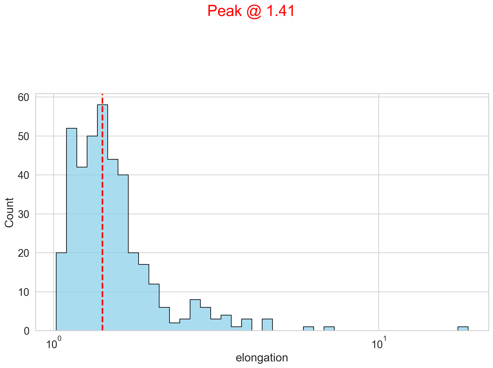
[28]:
gaussian_df['elongation'].min(), gaussian_df['elongation'].max()
[28]:
(np.float64(1.0166872964291602), np.float64(18.84003541938467))
[29]:
g = fovea.sns.histplot(
data=gaussian_df,
x='amplitude',
bins=30,
element='step' # Use step plots for clarity
)
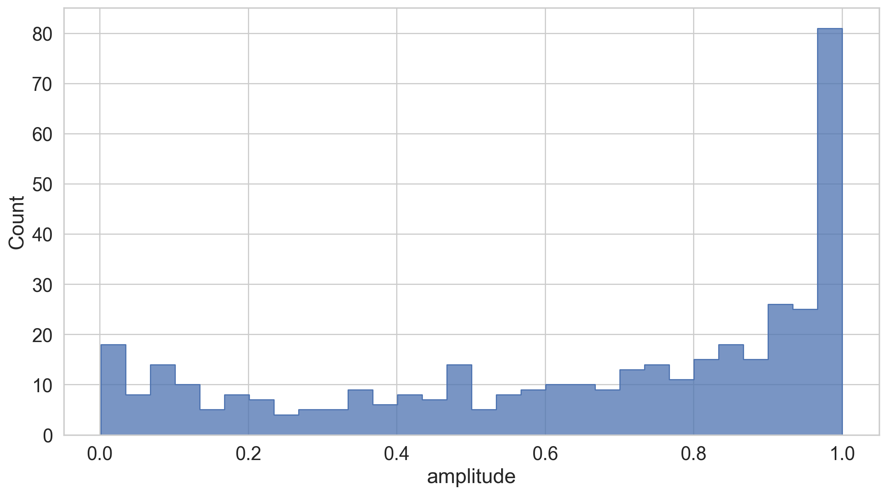
[30]:
g = fovea.sns.histplot(
data=gaussian_df,
x='theta_deg',
bins=30,
element='step' # Use step plots for clarity
)
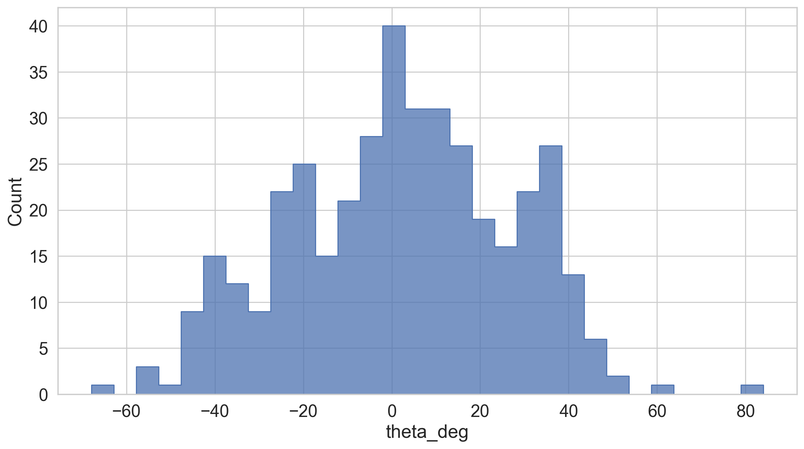
Interpretation:
θ=0: The major axis is aligned with the x-axis.
θ=π/2: The major axis is aligned with the y-axis.
θ=π/4: The major axis is at a 45° angle.
Voilà